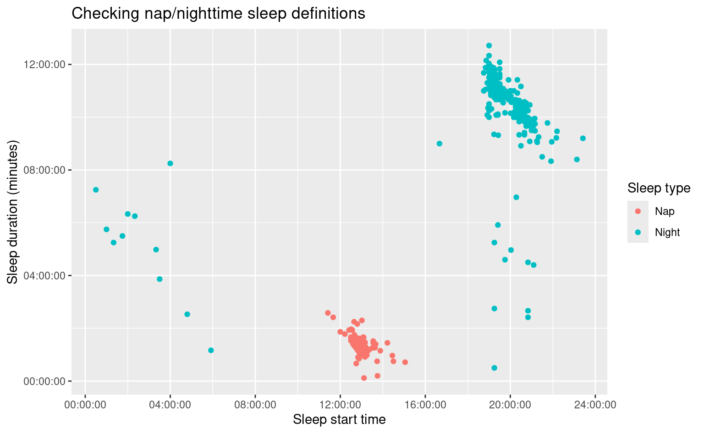
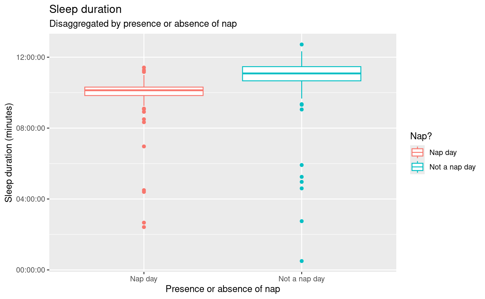
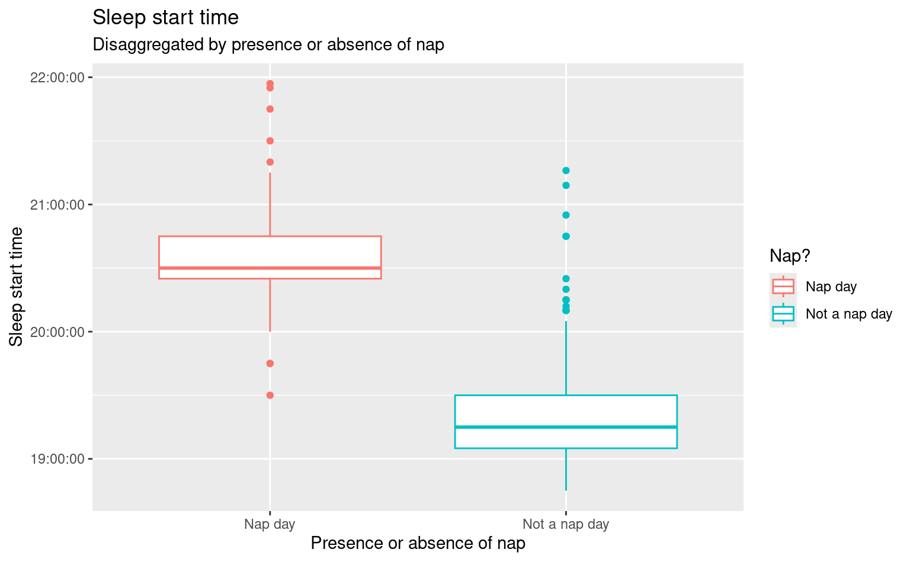

| type | start | end | duration |
|---|---|---|---|
| Sleep | 2024-09-03 19:23:00 | 2024-09-04 06:37:00 | 11:14:00 |
| Sleep | 2024-09-02 19:30:00 | 2024-09-03 07:35:00 | 12:05:00 |
| Sleep | 2024-09-01 19:05:00 | 2024-09-02 06:13:00 | 11:08:00 |
| Sleep | 2024-08-31 21:57:00 | 2024-09-01 07:01:00 | 09:04:00 |
| Sleep | 2024-08-31 13:44:00 | 2024-08-31 14:29:00 | 00:45:00 |
| Sleep | 2024-08-30 20:55:00 | 2024-08-31 07:23:00 | 10:28:00 |
Sleep Patterns in Huckleberry Records
Rationale
As the parents of a three year old, we want to optimize our child’s sleep. We have anecdotally noticed that earlier bedtimes seem to be related to better overall night sleep, and would like to test that idea with sleep data tracked in the Huckleberry app.
The Data
We’ve been tracking sleep data in the Huckeberry app since the child’s birth. Because children’s sleep needs and nap patterns change over time, we’ll only consider data from 2024. We have 369 sleep records from 2024, including nap and nighttime sleep. Each record represents an instance of sleep with a start datetime, an end datetime, and a duration:
Identifying nap and nighttime sleep
For this analysis, we are primarily interested in the duration of nighttime sleep, so we want to focus on nighttime sleep records. We can differentiate between nap and nighttime sleep based on the start time of the sleep record. We defined naps as sleep that starts between 8am and 4pm. We also expect them to be shorter than most nighttime sleep records, but did not include this as part of the formal definition.
We can do a gut check of that classification to make sure it seems reasonable by looking at a basic scatter plot of sleep start time against sleep duration, with color mapped to the sleep type.

Sleep records coded as ‘naps’ cluster nicely together and generally have short durations relative to records defined as nighttime sleep, so our definition seems reasonable.
How do naps influence nighttime sleep?
While the main purpose of our analysis is to look at how sleep start time relates to sleep duration, we also know that nighttime sleep needs vary depending on whether or not a nap occurred that day. Now that nap records are identified in our data, we can determine which days are nap days and which days are not, and compare overall overnight sleep needs based on the presence or absence of a nap.

This visualization shows that when the child naps, they need less sleep overnight, and when they don’t nap they need more sleep overnight. We can also see that sleep start time is much later on nap days:

The presence or absence of a nap clearly has a big influence on sleep start time and duration. Given this, and given that we still want to test the hypothesis that within a particular type of day (nap, no-nap), earlier sleep times are related to longer sleep durations, it makes sense to analyze nap and no-nap days separately.
The Patterns
By plotting sleep duration against sleep start time, we can see the negative relationship between the two for both nap days and no-nap days. This means that when sleep start time is larger (i.e., later in the day), sleep duration is shorter.

We can also observe this negative relationship if we run a simple linear regression, which shows a significant negative coefficient on starttime. However, the fit of the regression is very weak, with an R2 value of only 0.151.
Call:
lm(formula = duration_decimal ~ starttime + nap_day, data = huckle_decimal)
Residuals:
Min 1Q Median 3Q Max
-10.4231 0.0655 0.3059 0.5412 1.5596
Coefficients:
Estimate Std. Error t value Pr(>|t|)
(Intercept) 28.93809538 4.23565428 6.832 0.0000000000684 ***
starttime -0.00025996 0.00006052 -4.295 0.0000253578795 ***
nap_day 0.14678011 0.31700585 0.463 0.644
---
Signif. codes: 0 '***' 0.001 '**' 0.01 '*' 0.05 '.' 0.1 ' ' 1
Residual standard error: 1.475 on 240 degrees of freedom
Multiple R-squared: 0.1513, Adjusted R-squared: 0.1442
F-statistic: 21.39 on 2 and 240 DF, p-value: 0.000000002833We could tweak this model to make it perform a little better, but it doesn’t seem especially promising.
Conclusion
As observed anecdotally, there is a weak relationship between sleep start time and duration, regardless of whether the child napped during the day. However, the relationship is weak enough that it doesn’t justify adjusting bedtime routings.